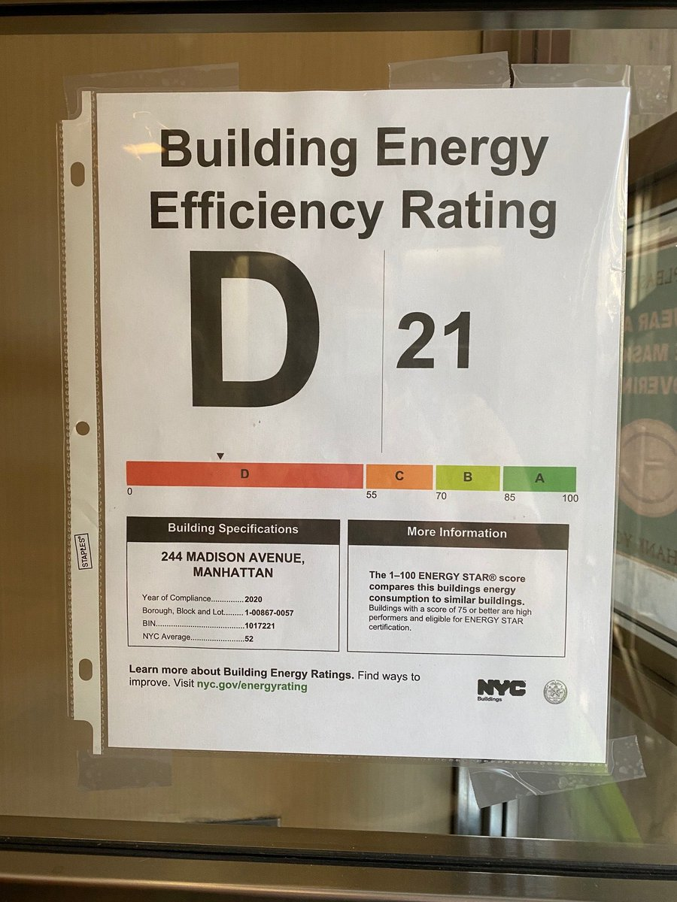

New York City Energy Efficiency Ratings data recommends NYC building managers would benefit from a Visit from the energizer bunny.
Data from this year's energy ratings rank Manhattan last out of the five boroughs in efficiency. New York Local Law 33 enforced buildings to provide their buildings energy efficiency rating posted on the front doors. The ratings rank from letter grades A to F, a letter grade F being the lowest grade a building can receive.
This years results show Manhattan has a long way to go before it is energy friendly. The amount of buildings with a rating of D or F far surpassed the amount of neighboring boroughs Queens, Brooklyn, and the Bronx.
The City is taking new measures to combat air pollution and influence people to opt for energy resilient alternatives. A congestion pricing bill will discourage motor vehicles from entering Manhattan's lower districts. In combination with an expansion of bike lanes the efforts are to encourage bike use.